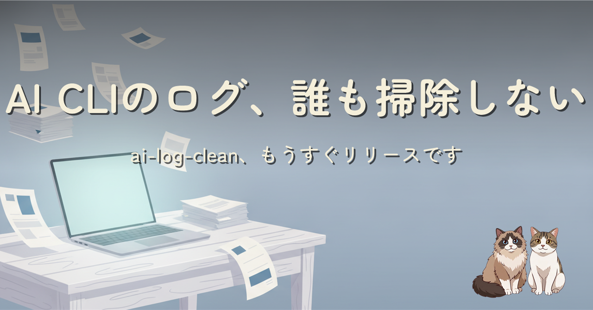

Claude Code を半年使ったら ~/.claude/projects/ が 1.41 GB になっていました。Codex CLI も Cursor Agent も opencode も Grok Build も、入れた瞬間から会話履歴を書き残しはじめて消す仕掛けを持たない設計でした。retention 60 日で日次自動掃除する小さな CLI、もうすぐリリースです。
resume を売りにする AI コーディング CLI（Claude Code / Codex CLI / GitHub Copilot CLI / Cursor Agent / opencode / Grok Build / Antigravity CLI）は構造的にログを捨てない設計になっていて、放っておくとディスクが永遠に膨張します。とくに Antigravity は settings.json に retention のキー枠すら無く、Gemini CLI 終了を機に閉じた個人プラン側で運用機能がごっそり落ちていました。それを 60 日で自動掃除する ai-log-clean をもうすぐ正式リリースします。